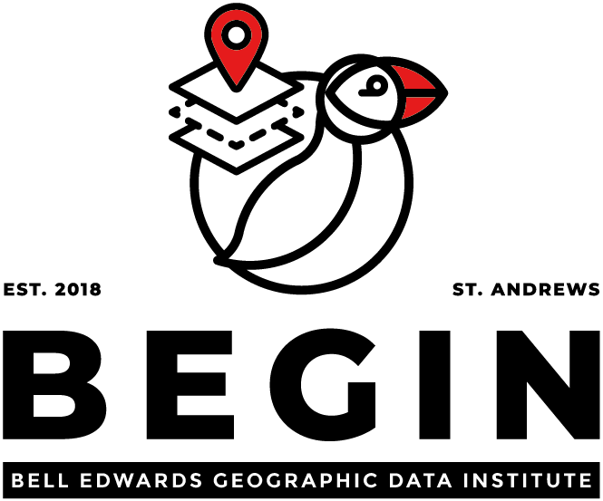

Getting started
Module GG3209 - Second Part

Welcome to the handbook for the second part of the module GG3209 Spatial Analysis with GIS. This part of this module is about Python and how we can use this powerful programming language to deal and analyse spatial data, weather is in Vector or Raster format. While in the first part of the GG3209 module you were mostly focus in the use of QGIS (ADD LINK) the powerful and open source GIS tool to work with spatial data, however in this part we will cover an introduction to Python, and its use for manipulation of spatial data and deployment of spatial analysis models.
Python has been multiple times catalogued as the one of the most popular programming technologies and it is widely used as a scripting language in the GIScience world. Students will learn how to set up their own development environment with a popular tool called Jupyter Notebooks, then learn how to manipulate vector and raster data and finish with running clustering methods, as a useful methodology for dissertations.
1 Content
Introduction to Python, Jupyter Notebooks, and GIT - Working with tabular and spatial data in Python - Clustering models This part will stablish a comprehensive introduction to Python (an easy to learn and powerful development programming language) and its use for manipulation of spatial data and deployment of spatial analysis models. Python has been multiple times catalogued as the one of the most popular programming technologies and it is widely used as a scripting language in the GIScience world. Students will learn how to set up their own development environment with a popular tool called 3 Jupyter Notebooks, then learn how to manipulate vector and raster data and finish with running clustering methods, as a useful methodology for dissertations.
To learn more about Quarto books visit https://quarto.org/docs/books.
2 University Staff
Module Co-ordinators: Dr Urška Demšar or Dr Fernando Benitez-Paez
Office hours: By appointment online and live during the labs
Lab assistants: Dr Charlotte van der Lijn , Ali Moayedi, Benjamin Ong, Georg Kodl
3 Our Research

If you want to know more about why spatial data holds the key to unlocking a deeper understanding of our planet and its intricate systems. Let’s BEGIN a spatial and data-driven conversation and be part of our multidisciplinary group in St Andrews. https://begin.wp.st-andrews.ac.uk/